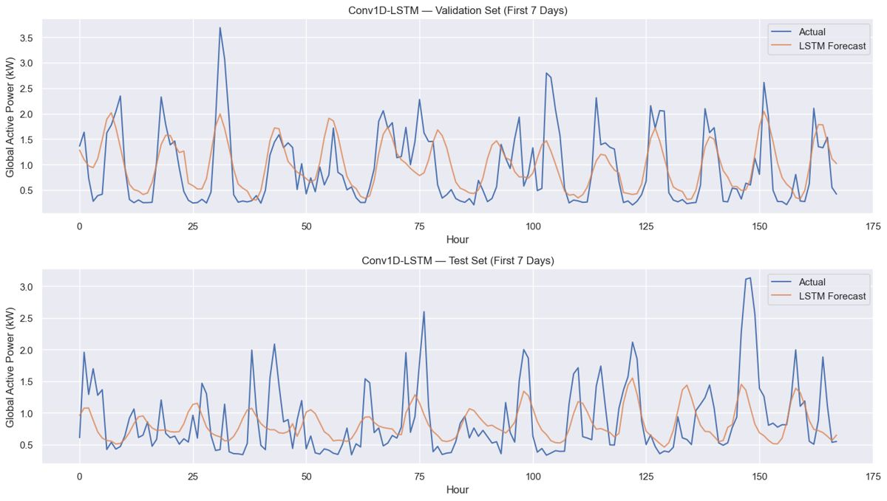

Shiv Shankar Singh
I build multi-agent AI systems, implement ML from scratch, and turn experiments into working software. Still learning, already shipping; every claim below links to code.

I like understanding what happens beneath the abstraction: how a model makes a prediction, how an agent workflow is coordinated, how an experiment becomes an application. I learn by implementing, and sometimes the experiment tells me to keep the simpler model.
hover, focus or tap a tile for details · drop assets/thumbs/<id>.png to replace any tile visual
Terminal-native, provider-agnostic. A request is classified, planned, implemented, tested and reviewed by separate agents with shared runtime state. repo · read the source · orchestrator.py · pypi: fiat-pup
- Classify: SIMPLE goes to one Coder with full tools; COMPLEX runs the full workflow.
- Role permissions: Planner and Reviewer get read-only tools (read, list, glob, grep). Coder adds edit, multi-edit and
run_command. Tester gets onlyrun_command. - Feedback loop: a test failure or review rejection returns to the Coder with prior test results and findings, capped by
FIAT_MAX_AGENT_ITERATIONS(default 3), then it stops and flags manual review. - Providers: modules for Anthropic, Gemini and OpenAI behind a factory; README and résumé also list OpenRouter and Groq. Slash commands include
/provider,/model,/context(tokens and cost).
One topic in, a cited Markdown article and a slide deck out. repo · backend · frontend · supabase · example article · live demo (per résumé)
- Graph, not one prompt:
backend/app/core/agent.pydefines five LangGraph nodes with a conditional edge after the router, so research, planning, parallel drafting and assembly can each be bounded, retried and inspected. - Parallelism: sections fan out via
Send; a semaphore (3 by default in code) and exponential backoff on rate limits keep providers happy. - Per résumé: Tavily research with dedup; nine slide layouts; Beamer PDF and editable PPTX; slide linter plus single-slide LLM repair; bring-your-own-key with Fernet-encrypted keys; Supabase auth with row-level security.
crypto.py,auth.py,slides.pyexist in the backend.
Notes and experiments from ai-engineering-lab, each linked to the file. Descriptions summarise file names and folder contents; open the notebook for results.
Baseline Conv1D–LSTM, 24-step horizon: 1.1772 kW test RMSE (0.7226 validation). Volatility-switching hybrids scored 1.1964–1.2505 kW; the SARIMA hybrid gave no improvement. The README concludes this holds for this dataset and setup: extra complexity did not help. inspect plots · read the notebook

fiat-sim
Scripted simulation, not a live LLM. Mirrors the orchestrator logic incl. the 3-iteration cap.
forecast-viewer
Test RMSE (kW) from the project README: baseline vs hybrids by k.
programming Python · C++ · JavaScript · TypeScript · SQL engineering DSA · OOP · REST APIs · Web dev · Git & GitHub ai/ml/data PyTorch · scikit-learn · Hugging Face · Deep learning · Transformers · LLMs · RAG · Agentic AI · Data analysis frameworks React · FastAPI · Tailwind · Docker · LangGraph · LangChain · Pydantic · Supabase · Jupyter · Vercel · Render soft Problem solving · Analytical skills · Communication · Collaboration
- Machine learning and deep learning
- Sports analytics and prediction models
- AI/ML projects
- Transformers and large language models
- Finance and sports
Open to interesting engineering problems and collaborations. Email is quickest.